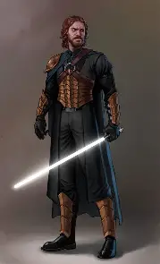

Roll nasceu em Alderaan, mas seu planeta foi destruído pelo império galáctico emquanto viajava. Em busca de vingança ele se dedicou a aprender os caminhos da força, mesmo que sozinho. Agora ele é um inimigo poderoso do império. Ele já tomou e libertou metade do antigo império e matou todos os inquisidores e está cada dia mais poderoso.

| personagem | método | Força | Velocidade | Defesa | inteligência | Força do lado do Bem | Força do lado Negro |
|---|---|---|---|---|---|---|---|
| Roll | Dado d20(>13) | 19 | 20 | 14 | 20 | 19 | 19 |